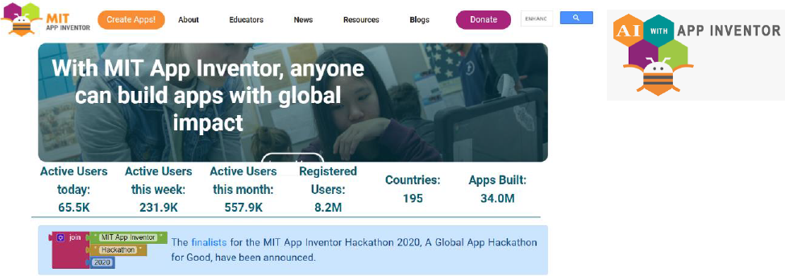
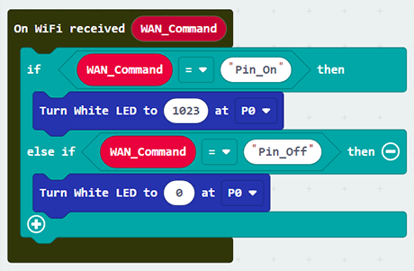
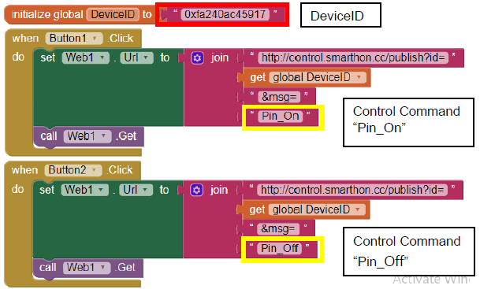

7. Chapter 3: Control micro:bit by App Inventor 2¶
App inventor 2 is a blocks-based programming tool, which help beginners to build fully functional app in Android device. The interface is graphical base and support drag and drop operations. It consists of different components, such as button, slider, date pickers, image, camera, sensors including Accelerometer and connectivity to web, etc. The app can be exported or published to Play store for our daily life.

For creating IoT application, you can use App Inventor 2 to create web connection with micro:bit. In WAN control, after micro:bit is connected to internet, it keep listening and execute customized operation when WAN command is received. The customized operation could be Pin On/off, such as “open/close LED”, or set value such as “set the light intensity” and “set current time”.

7.1. Know the API (Control command)¶
API is one way to communicate between the objects on the Internet world. API is just like an “URL” which is website link.

This is the API you can use to control the micro:bit
http://control.smarthon.cc/publish?id=DeviceID&msg=ControlCommand
7.3. Programming (Makecode), get the Device ID¶
Goal: This example is to turn on/off micro:bit modules only.
Step 1
After initializing, you can connect to the WiFi:
Choose IoT:bit -> Set Wi-Fi to ssid “”, pwd “”. Enter your Wi-Fi name and password

Step 2
“On WiFi connected” is an event handler.
It will be triggered once after connected with WiFi.

Step 3: Set the Wi-Fi listening on Micro:bit WAN control command action
After micro:bit connected to WiFi, it will start WiFi remote control (WAN).
If Wan command “Pin_On” is received, white LED will be turned on (intensity:1023)
If Wan command “Pin_Off” is received, white LED will be turned off (intensity:0) 
Step 4: Get micro:bit Device ID
After the micro:bit is connected to Wi-Fi successfully, it will start WAN control. The device ID will be shown.

7.4. Create the mobile app in App Inventor 2¶
Step 1
Create a new project in App Inventor 2, on “Designer”
Drag “Layout”>”HorizontalArragement” to the page.
Drag “User Interface” > “Button” twice to the place inside the HorizontalArrangement
Drag Connectivity> “Web” to the page

Step 2
Set the program in app inventor 2, on “Blocks”
Take the block as below 
When Button 1 and 2 is pressed, it calls the WAN control API respectively
http://control.smarthon.cc/publish?id=DeviceID&msg=ControlCommand

7.5. Result¶
In App Inventor 2, you can perform real-time testing in your mobile phone by AI Companion
App Inventor 2 Mobile phone (by AI Companion)

Also, you can also build and download the android app and open it in your mobile phone.
App Inventor 2 Mobile phone (by building app)

Testing:
After the WAN remote control is started,
When Button1 is clicked, it will send WAN command “Pin_On” to the micro:bit with provided Device ID, the LED on P0 will be turned on.

When Button2 is clicked, it will send WAN command “Pin_Off” to the micro:bit with provided Device ID, the LED on P0 will be turned off.

7.6. Know more (Using WAN command with value in App Inventor 2)¶
The above example is for turning the LED on/off only. How about if we want to control the LED with intensity? The below example is to control your modules with intensity.
7.6.1. Know the API (control command with value)¶
http://control.smarthon.cc/publish?id=DeviceID&msg=ControlCommand
http://control.smarthon.cc/publish?id=DeviceID&msg=ControlCommand&value=Value
7.6.2. Programming (Makecode)¶
Similarly, initialize the Wi-Fi and connect wifi on start. For this turn, we will use “On WAN command received with value WAN_Command Value”

If Wan command “PinValue” is received, white LED will be turned on with the given intensity.

7.6.3. App Inventor 2 setting¶
Step 1
Create a new project in App Inventor 2, on “Designer”.
Drag “Layout” > ”HorizontalArragement” to the page.
Drag “User Interface” > “TextBox” and “Button” to the place inside the HorizontalArrangement
Drag “Connectivity” > “Web” to the page

Step 2
When Button 3 is pressed, it calls the WAN control API respectively
http://control.smarthon.cc/publish?id=0xfa240ac45917&msg=PinValue&value=600

7.6.4. Testing¶
When the button 3 is pressed with the intensity of 0 or 600, it will be turned on accordingly.